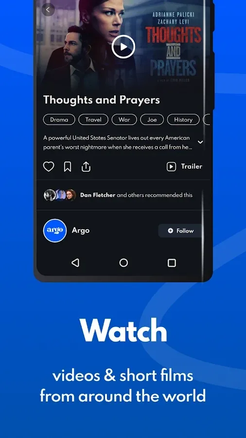
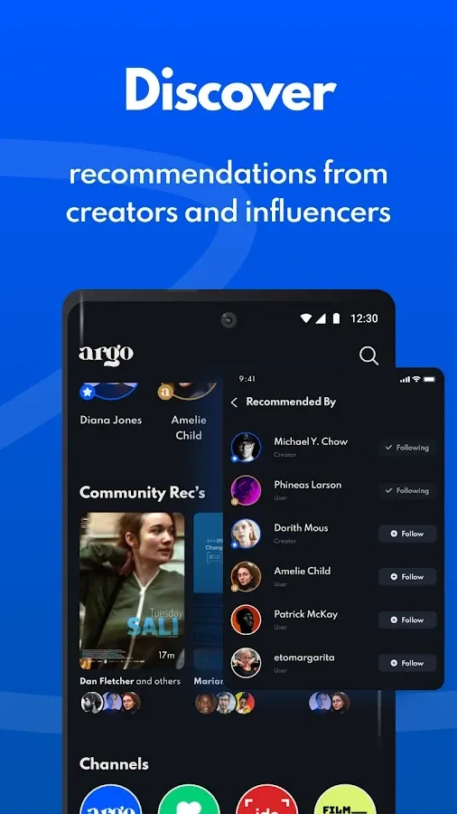
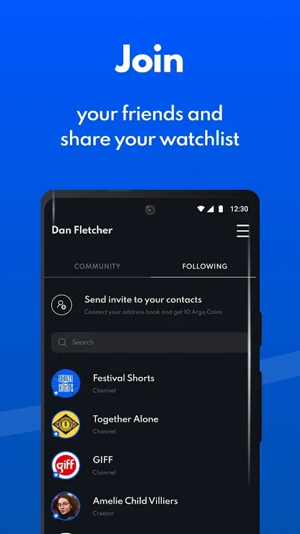

A from-scratch Android product
The Android product was built from scratch, with modular boundaries introduced from the first delivery phase.
An Android social video product built from scratch with HLS/DASH playback, discovery context, subscriptions, and a public release.

The Android product needed video playback, persistent watch state and social discovery context across a large, changing content graph.
The Android product was built from scratch, with modular boundaries introduced from the first delivery phase.
Playback, feeds, profiles, recommendations, subscriptions and local data had to mature together.
The scope combined media infrastructure, application architecture and social product delivery.
One player abstraction keeps source selection, seeking, subtitles, casting and progress behaviour consistent across product surfaces.
Film, creator, friend or playlist context enters the watch experience.
Selects HLS/DASH/progressive sources, restores position and exposes progress.
Watch events retain discovery context for recommendation and reward logic on the backend.
The engineering choices support continuity across media, feeds and migration rather than optimising one isolated screen.
Avoid duplicating media-source, seeking, subtitle and casting behaviour across screens.
Room backs watch history, profiles, subscriptions and paged feeds—not only a tiny cache.
Preserve creator, friend or playlist context without moving recommendation rules into Android.
New work moves toward Compose, MVVM and Hilt while existing XML/MVP paths remain available.
The first implementation is Day 0; beta, working MVP and public release are shown as elapsed progression.
Git history verifies the first personal commit and beta/MVP milestones; the exact July publication day is unavailable.
Started the Android product from scratch and established its modular foundation.
Prepared the internal beta build.
Completed the working MVP milestone, including the main feed.
Exact publication day unavailable.


The case demonstrates from-scratch product delivery and gradual modernisation. Argo remains publicly listed; current reach is product context, not personal causal attribution.
Beta after 27 days, working MVP after 40, public release during days 69–99.
Playback, local data, social discovery, subscriptions and architecture migration.
View Argo on Google Play
Google Play listing viewed 31 August 2026: 50K+ downloads — product reach, not personal impact.
Target role · Staff Mobile Engineer (Android + Flutter)
Worldwide remote · English / Russian
Novi Sad, Serbia · hybrid possible